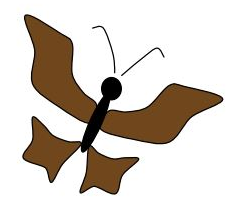

Quiz
1. Jika titik A(-2,3) didilatasikan dengan pusat O(0,0) dan skala 3 maka tentukanlah bayangan titik tersebut!
Gambar berikut merupakan contoh batik motif kupu-kupu yang memiliki beberapa bagian ornament (antenna, kepala, tubuh, sayap) , dilatasikan gambar tersebut dengan skala translasi +k dan -k. Dengan k adalah anggota bilangan asli sesuai yang anada inginkan. Lakukanlah eksplorasi ini di kertas millimeter block. Happy trying! Jangan sampai kupu-kupunya kabur ya
